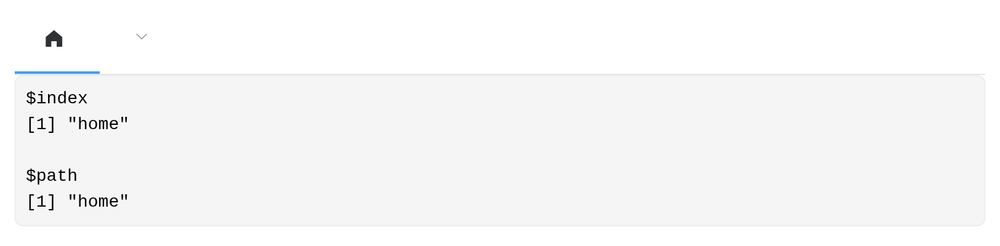
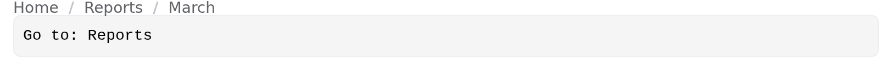
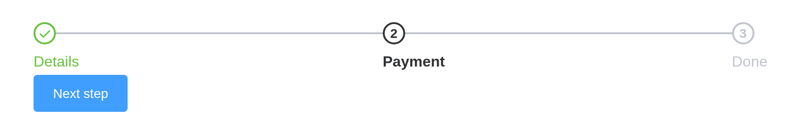
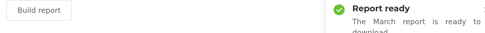
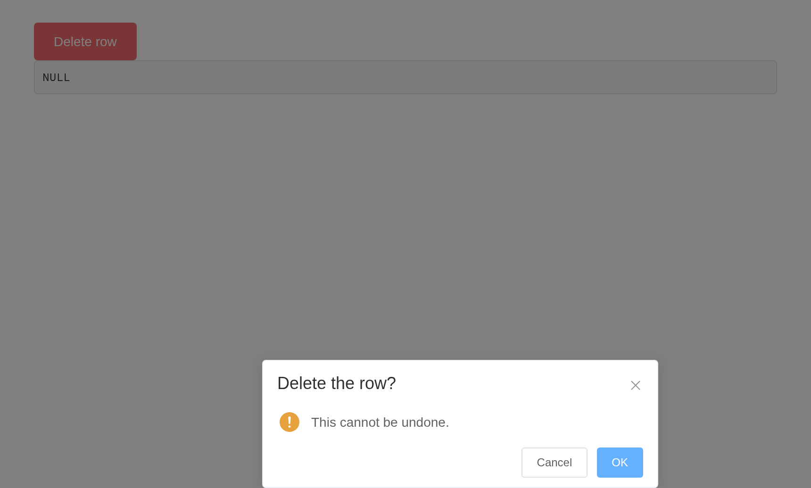
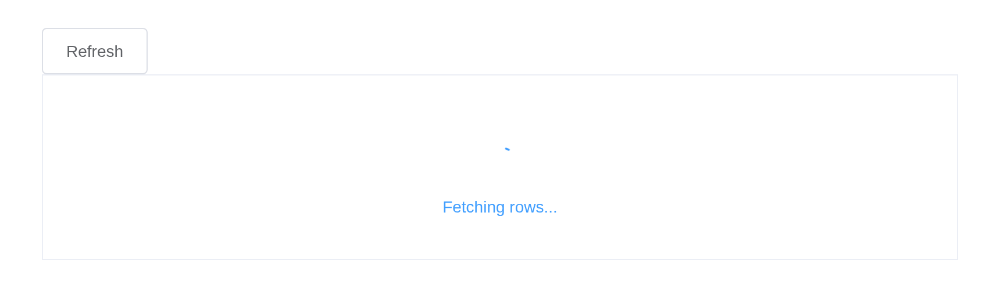

Element’s navigation components report where the user went; its feedback components are called from the server. Neither navigates or blocks on its own – what happens next is your app’s decision.
Menus
el_menu() takes a nested list. Each item’s
index is what it reports, and
input$<id>_path gives the trail to it:
ui <- el_page(
el_menu("nav", mode = "horizontal", active = "reports", items = list(
list(index = "home", label = "Home", icon = "el-icon-s-home"),
list(index = "reports", label = "Reports", children = list(
list(index = "monthly", label = "Monthly"),
list(index = "annual", label = "Annual")
)),
list(index = "settings", label = "Settings", disabled = TRUE)
)),
verbatimTextOutput("where")
)
server <- function(input, output, session) {
output$where <- renderPrint(list(index = input$nav, path = input$nav_path))
}
shinyApp(ui, server)
active is Element’s default-active: it is
the current item, and update_el_menu() moves it, so
“default” would undersell it.
Breadcrumbs
A breadcrumb reports the label clicked, so it can drive navigation inside a Shiny app without any routing:
ui <- el_page(
el_breadcrumb("trail", items = list(
list(label = "Home"), list(label = "Reports"), list(label = "March")
)),
verbatimTextOutput("went")
)
server <- function(input, output, session) {
output$went <- renderText(paste("Go to:", input$trail))
}
shinyApp(ui, server)
Steps
el_steps() reports the active step and is moved from the
server:
ui <- el_page(
el_steps("wizard", active = 0, finish_status = "success", steps = list(
list(title = "Details"), list(title = "Payment"), list(title = "Done")
)),
el_button("next", "Next step", type = "primary")
)
server <- function(input, output, session) {
observeEvent(input$`next`, {
update_el_steps(session, "wizard", active = min(input$wizard + 1, 3))
})
}
shinyApp(ui, server)
Tabs
el_tabs() holds live components, because it renders as
markup rather than as a Vue instance of its own:
el_tabs("views", type = "border-card", tabs = list(
list(name = "settings", label = "Settings", content = tagList(
el_switch("dark", value = TRUE, active_text = "Dark mode"),
el_slider("size", value = 14, min = 10, max = 24)
)),
list(name = "about", label = "About", content = tags$p("Version 0.1.0"))
))Messages and notifications
These are calls from the server rather than UI. Neither waits for an answer:
ui <- el_page(el_button("save", "Save", type = "primary"))
server <- function(input, output, session) {
observeEvent(input$save, {
el_message(session, "Saved", type = "success")
})
}
shinyApp(ui, server)
ui <- el_page(el_button("run", "Build report"))
server <- function(input, output, session) {
observeEvent(input$run, {
el_notification(session, "The March report is ready to download.",
title = "Report ready", type = "success")
})
}
shinyApp(ui, server)
A message given an id can be closed from the server by
it – one that stays up while work runs, say, with
duration = 0:
ui <- el_page(el_button("upload", "Upload", type = "primary"))
server <- function(input, output, session) {
observeEvent(input$upload, {
el_message(session, "Uploading...", id = "busy", duration = 0,
icon_class = "el-icon-loading")
later::later(function() {
el_message_close(session, "busy")
el_message(session, "Uploaded", type = "success")
}, 5)
})
}
shinyApp(ui, server)Asking a question
When you need an answer, el_message_box() asks and
reports it as input$<id>: "confirm",
"cancel" or "close". For
box_type = "prompt", a confirmed answer is a list of
action and the value typed.
ui <- el_page(
el_button("delete", "Delete row", type = "danger"),
verbatimTextOutput("answer")
)
server <- function(input, output, session) {
observeEvent(input$delete, {
el_message_box(session, "confirm_delete", "This cannot be undone.",
title = "Delete the row?", type = "warning")
})
output$answer <- renderPrint(input$confirm_delete)
}
shinyApp(ui, server)
For something smaller than a dialog, el_popconfirm()
anchors the question to the button that raised it, and reports
input$<id>_confirm:
el_popconfirm("remove",
reference = el_button("remove_btn", "Remove", type = "danger"),
title = "Remove this item?")Loading
el_loading() opens a named mask and
el_loading_close() shuts it. The message goes out as soon
as it is sent, so a mask opened before slow work is on screen while the
work runs:
ui <- el_page(
el_button("refresh", "Refresh"),
tags$div(id = "panel", style = "height: 160px; border: 1px solid #ebeef5",
tableOutput("rows"))
)
server <- function(input, output, session) {
observeEvent(input$refresh, {
el_loading(session, "busy", target = "#panel", text = "Fetching rows...")
on.exit(el_loading_close(session, "busy"), add = TRUE)
Sys.sleep(3) # the slow part
output$rows <- renderTable(head(mtcars, 3))
})
}
shinyApp(ui, server)
Because the mask is named, a second call under the same name replaces the first rather than stacking.
Dialogs and drawers
Both are markup with a Shiny input binding, so they hold live
components. input$<id> is whether it is open –
closing by the cross or the backdrop is visible to the server too.
ui <- el_page(
el_button("open", "Settings", type = "primary"),
el_dialog("settings", title = "Settings", width = "420px",
content = tagList(
el_switch("dark", value = TRUE, active_text = "Dark mode"),
tags$br(), tags$br(),
el_slider("size", value = 14, min = 10, max = 24)
),
footer = el_button("apply", "Apply", type = "primary"))
)
server <- function(input, output, session) {
observeEvent(input$open, update_el_dialog(session, "settings", visible = TRUE))
observeEvent(input$apply, update_el_dialog(session, "settings", visible = FALSE))
}
shinyApp(ui, server)